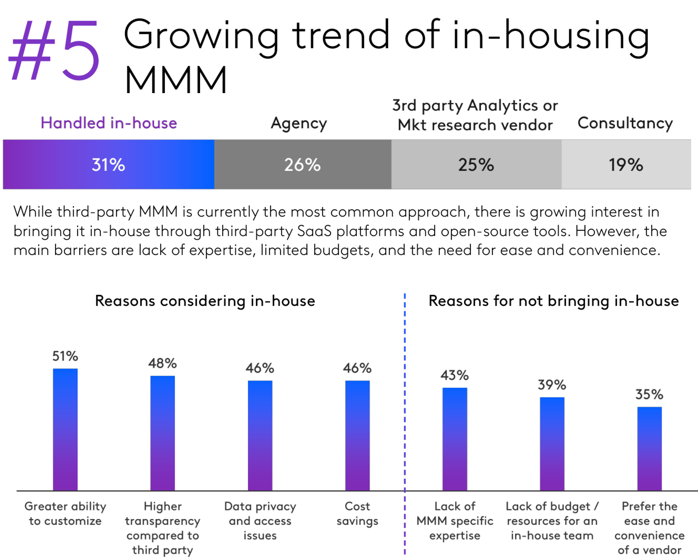

Advertising Measurement
UCSD MGTA 451 — Marketing
Agenda
- Advertising Importance
- Causality
- Fundamental Problem of Causal Inference
- Advertising Measurement
- Correlational Advertising Measurement
- Advertising Experiments & Quasi-experiments
- Industry practices
- Marketing Mix Models
- Career considerations
Advertising Importance
Publisher revenue since 1950


- Across sectors, typical ad-sales ratio is 2.83\%
- Typical public company net margin: 8-10%
- So modal firm could increase EBITDA 28-35% by dropping ads: (8+2.83)/8=1.35
- Or could it? What would happen to top-line revenue?Toy economics of advertising
Suppose we pay $10 to buy 1,000 digital ad OTS. Suppose 3 people click, 1 person buys.
Ad profit > 0 if transaction margin > $10
- But we bought ads for 999 people who didn't buyOr, ad profit > 0 if CLV > $10
- Long-term mentality justifies increased ad budgetOr, ad profit > 0 if CLV > $10 and if the customer would not have purchased otherwise
- This is "incrementality" - But how would we know if they would have purchased otherwise?Ad effects are subtle–typically, 99.5-99.9% don’t convert–but ad profit can still be robust
- Ad profit depends on ad cost, conversion rate, margin ... and how we formulate our objective function - Exception: Search ads are atypical, you may see conversion rates like 1-5%, but incrementality questions are even more important

Causality
Examples, fallacies and motivations

Suppose 10 outcomes, 1000 predictors, N=100,000 obs
- Outcomes might include visits, sales, reviews, ... - Predictors might include ads, customer attributes & behaviors, device/session attributes, ... - You calculate 10k bivariate correlation coefficientsSuppose everything is noise, no true relationships
- The distribution of the 10,000 correlation coefficients would be Normal, tightly centered around zero - A 2-sided test of {corr == 0} would reject at 95% if |r|>.0062We should expect 500 false positives - What is a ‘false positive’ exactly?
In general, what can we learn from a significant correlation?
- "These two variables likely move together." Anything more requires assumptions.
Classic misleading correlations
“Lucky socks” and sports wins
- Post hoc fallacy [1] (precedence indicates causality AKA superstition)Commuters carrying umbrellas and rain
- Forward-looking behaviorKids receiving tutoring and grades
- Reverse causality / selection biasIce cream sales and drowning deaths
- Unobserved confoundsCorrelations are measurable & usually predictive, but hard to interpret causally
- Correlation-based beliefs are hard to disprove and therefore sticky - Correlations that reinforce logical theories are especially sticky - Correlation-based beliefs may or may not reflect causal relationships
“Revenue too high alert”

Fundamental Problem of Causal Inference
Causal Inference
Suppose we have a binary “treatment” or “policy” variable \(T_i\) that we can “assign” to person \(i\)
- Examples: Advertise, Serve a design, Recommend a productSuppose person \(i\) could have a binary potential “response” or “outcome” variable \(Y_i(T_i)\)
- Examples: Visit site, Click product, Add to Cart, Purchase, Rate, Review - Looks like the marketing funnel model we saw previously - "Treatment" terminology came from medical literature; Y could be patient outcomeImportant: \(Y_i\) may depend fully, partially, or not at all on \(T_i\), and the relationship may differ across people
- Person 1 may buy due to an ad; person 2 may stop due to an ad
Why care?
We want to maximize profits \(\Pi = \Sigma_i \pi_i(Y_i(T_i), T_i)\)
Suppose \(Y_i=1\) contributes to revenue; then \(\frac{\partial \pi_i}{\partial Y_i} >0\)
Suppose \(T_i=1\) has a known cost, so \(\frac{\partial \pi_i}{\partial T_i} <0\)
Effect of \(T_i=1\) on \(\pi_i\) is \(\frac{d\pi_i}{dT_i}=\frac{\partial \pi_i}{\partial Y_i}\frac{\partial Y_i}{\partial T_i}+\frac{\partial \pi_i}{\partial T_i}\)
We have to know \(\frac{\partial Y_i}{\partial T_i}\) to optimize \(T_i\) assignments
- Called the "treatment effect" (TE)Profits may decrease if we misallocate \(T_i\)
Fundamental Problem of Causal Inference
We can only observe either \(Y_i(T_i=1)\) or \(Y_i(T_i=0)\), but not both, for each person \(i\)
- The case we don't observe is called the "counterfactual"This is a missing-data problem that we cannot resolve. We only have one reality
- A major reason we build models is to compensate for missing data
So what can we do?
Experiment. Randomize \(T_i\) and estimate \(\frac{\partial Y_i}{\partial T_i}\) as avg \(Y_i(T_i=1)-Y_i(T_i=0)\)
- Called the "Average Treatment Effect" - Creates new data; costs time, money, effort; deceptively difficult to design and then act onUse assumptions & data to estimate a “quasi-experimental” average treatment effect using archival data
- Requires expertise, time, effort; difficult to validate; not always possibleUse correlations: Assume past treatments were assigned randomly, use past data to estimate \(\frac{\partial Y_i}{\partial T_i}\)
- Much easier than 1 or 2 - But T is only randomly assigned when we run an experiment, so what exactly are we doing here? - Are we paying our agencies to distribute our ads randomly?Fuhgeddaboutit, go with the vibes, do what we feel
- Lots of advertisers do this
How much does causality matter?
- How hard should we work?Are organizational incentives aligned with profits?
Data thickness: How likely can we get a good estimate?
Organizational analytics culture: Will we act on what we learn?
Individual: promotion, bonus, reputation, career
Will credit be stolen or blame be shared?Accountability: Will ex-post attributions verify findings? Will results threaten or complement rival teams/execs?
- Analytics culture starts at the top
Advertising measurement
Advertising measurement quantifies ad delivery, exposure and outcomes to improve advertising efforts
- Delivery: Were the ads sent as agreed? Can we verify? Did humans receive them? Were frequency caps respected? - Exposure: Which ads were visible? Did consumers pay attention? - Outcomes: Which ads generated attributable conversions? How did unattributable conversions change? - Counterfactuals: What would have happened without the advertising campaign? - Implications: How to improve our next campaign?Advertising measurement is expensive, so must directly inform firm choices, else likely to be unprofitable
- Should we advertise? How much to budget? - How to split budget between advertising types and times? - How to split budget within advertising types and times? - How much to bid for which opportunities? - When/where/whom to target? What to say?
What do we measure?
Most often, we measure Return on Advertising Spend (ROAS)
\(\frac{\text{Revenue Attributed to Ads}}{\text{Ad Spending}}\) or \(\frac{\text{Revenue Attributed to Ads}-\text{Ad Spending}}{\text{Ad Spending}}\)
Increasingly, we report incremental ROAS (iROAS) if we have causal identification
- This is because attribution is usually correlationalWe also should measure funnel-wide KPIs, e.g. brand metrics, visits, add-to-cart, sales, revenue, …
- We usually get economies of scope in measurementDiminishing returns
In theory, we buy the best ad opportunities first
So, increasing spend should lower marginal returns ("saturation")
Marginal ROAS (ROAS) is the tangent to the curve
Nonlinearity means that ROAS != mROAS
We use ROAS for overall evaluation, and mROAS for budget reallocation
We don't necessarily want to maximize ROAS or mROAS (why not?)
The curve above can be S-shaped, but it's hard to prove empiricallyCorrelational advertising measurement
1. Lift Statistics
Compare conversion rates between people exposed to ads and people not exposed to ads
Usually reported as \(\frac{Prob.\{Conversion|Ad\}}{Prob.\{Conversion|NoAd\}}\) or \(\frac{Prob.\{Conversion|Ad\}-Prob.\{Conversion|NoAd\}}{Prob.\{Conversion|NoAd\}}\)
Lift > 1 interpreted as ads are working
This is purely correlational, as it ignores all targeting efforts
Lift can be incremental if ads are allocated randomly2. Regression
Get historical data on \(Y_i\) and \(T_i\) and run a regression
Could be across individuals, places, time, or combinations
Most people use OLS or MMM, but Google's CausalImpact R package is also popularThe implicit assumption is that past ads were allocated randomly, i.e. correlation\(==\)causality
"Better to be vaguely right than precisely wrong"
But are we the guy in the truck bed?In truth, past ads were only random if we ran an experiment
3. Multi-Touch Attribution (MTA)
Get individual-level data on every touchpoint for every purchaser
- Includes earned media, owned media & paid media (<--ads)
- Often sourced from third parties
Choose a rule to attribute purchases to touchpoints
- Single-touch rules: Last-touch, first-touch
- Multi-touch rules: Fractional credit, Shapley
Historically, Last-touch was popularMTA algorithm searches for touchpoint parameters that best-fit the conversion data given the rule
- Credit then informs future budget allocations
- MTA is designed to maximize attributions
- MTA assumes advertising is the *sole* driver of conversionsMTA is mostly dead due to privacy and platform reporting changes
- Zombie MTA lives on, despite signal lossStrongest args for corr(ad,sales)
Corr(ad,sales) should contain signal
- If ads cause sales, then corr(ad,sales)>0 (probably) (we assume)Some products/channels just don’t sell without ads
- E.g., Direct response TV ads for 1-800 phone numbers
- Career professionals say advertised phone #s get 0 calls without TV ads, so we know the counterfactual
- Then they get 1-5 calls per 1k viewers, lasting up to ~30 minutes
- What are some digital analogues to this?However, this argument gets pushed too far
- For example, when search advertisers disregard organic link clicks when calculating search ad click profits
- Notice the converse: corr(ad,sales)>0 does not imply a causal effect of ads on salesProblem 1 with corr(ad,sales)
Advertisers try to optimize ad campaign decisions
E.g. surfboards in coastal cities, not landlocked citiesIf ad optimization increases ad response, then corr(ad,sales) will confound actual ad effect with ad optimization effect
More ads in san diego, more surfboard sales in san diego. But would we have 0 sales in SD without ads?
Corr(ad,sales) usually overestimates the causal effect, encourages overadvertisingMany, many firms basically do this
It's ironic when firms that don't run experiments implicitly assume that past ads were randomized Problem 2 with corr(ad,sales)
- How do most advertisers set ad budgets? Historically, the top 2 ways were:
Percentage of sales method, e.g. 3% or 6%
- That's why ads:sales ratios are so often measured, for benchmarkingCompetitive parity
…others…
Do you see the problem here?
Problem 3 with corr(ad,sales)
Leaves marketers powerless vs
bigcolossal ad platformsPlatforms withhold data and obfuscate algorithms
- How many ad placements are incremental? - How many ad placements target likely converters? - How can advertisers react to adversarial ad pricing? - How can advertisers evaluate brand safety, targeting, context?Have ad platforms ever left ad budget unspent?
- Would you, if you were them? - If not, why not? What does that imply about incrementality?To balance platform power, you have to know your ad profits & vote with your feet
U.S. v Google (2024, search case)

Does Corr(ad,sales) work?

Why are some teams OK with corr(ad,sales)?
Some worry that if ads go to zero -> sales go to zero
- For small firms or new products, without other marketing channels, this may be good logic - Downside of lost sales may exceed downside of foregone profits - However, premise implies deeper problems, i.e. need to diversify marketing efforts - Plus, we can run experiments without setting ads to zero, e.g. weight testsSome firms assume that correlations indicate direction of causal results
- The guy in the truck bed is pushing forwards right? - Biased estimates might lead to unbiased decisions (key word: "might") - But direction is only part of the picture; what about effect size?
Why are some teams OK with corr(ad,sales)?
CFO and CMO negotiate ad budget
- CFO asks for proof that ads work - CMO asks ad agencies, platforms & marketing team for proof - CMO sends proof to CFO ; We all carry on - Should adFX team report to CFO or CMO?Few rigorous analytics cultures or ex-post checks
- In some cultures, ex-post checks may threaten bonuses, turf; may get personalEstimating causal effects of ads is not always easy
- Many firms lack expertise, discipline, execution skill - Ad/sales tests may be statistically inconclusive, especially if small - Tests may be designed without subsequent action in mind, then fail to inform future decisions ("science fair projects")
Why are some teams OK with corr(ad,sales)?
Platforms often provide correlational ad/sales estimates
- Which is larger, correlational or experimental ad effect estimates? - Which one might many client marketers prefer? - Platform estimates are typically "black box" without neutral auditors - Sometimes platforms respond to marketing clients' demand for good numbers - "Nobody ever got fired for buying [famous platform brand here]"Historically, agencies usually estimated RoAS
- Agency compensation usually relies on spending, not incremental sales - Principal/agent problems are common - Many marketing executives start at ad agencies - "Advertising attribution" is all about maximizing credit to ads - These days, more marketers have in-house agencies, and split work

- I believe we're a few years into a generational shift
- However, corr(ad,sales) is not going away
- Union(correlations, experiments) should exceed either aloneCausal advertising measurement
Ad Experiments: Common Designs
Randomly assign ads to customer groups on a platform; measure sales in each group
- Pros: AB testing is easy to understand, rules out alternate explanations - Cons: Can we trust the platform's "black box"? Will we get the data and all available insights?Randomize messages within a campaign
Randomize budget across times, places (“Geo tests”)
Randomize budgets, bids, or consumer segments
Randomize budget over platforms, publishers, behavioral targets, contexts
- Experimental design describes how we create data to enable treatment/control comparisons. Experimental data are amenable to any number of models or statistical analyses. - Causal identification is a property of the data, not the model
Experimental necessary conditions
Stable Unit Treatment Value Assumption (SUTVA)
- Treatments do not vary across units within a treatment group - One unit's treatment does not change other units' potential outcomes, i.e. treatments in one group do not affect outcomes in another group - May be violated when treated units interact on a platform - E.g., successful ad campaign could deplete inventory, leading to periods of product nonavailability, thereby changing other treated consumers' outcomes - Violations called "interference"; remedies usually start with cluster randomizationObservability
- Non-attrition, i.e. unit outcomes remain observableCompliance
- Treatments assigned are treatments received - We have partial remedies when noncompliance is directly observedStatistical Independence
- Random assignment of treatments to units
Muy importante
Before you kick off your test …
- Run A:A test before your first A:B test. Validate the infrastructure before you rely on the result. A:A test can fail for numerous reasons
- Can we agree on the opportunity cost of the experiment? "Priors"
- How will we act on the (uncertain) findings? Have to decide before we design. We don't want "science fair projects"
- Simple example: Suppose we estimate iROAS at 1.5 with c.i. [1.45, 1.55]. Or, suppose we estimate RoAS at 1.5 with c.i. [-1.1, 4.1]. What actions would follow each?
Productive experiments …
serve customer interests
- Working against customers drives customers awaylive within theoretical frameworks
- Science requires hypotheses if we want to learn from tests - Theoretical frameworks offer mechanisms and solutionstest quantifiable hypotheses
- Choose test size & statistical power based on hypothesisanalyze all relevant customer metrics
- Test positive & negative metrics, e.g. conversions & bounce rates - Test SR & LR metrics, e.g. trial & repurchase - Classic example: Pop-ups seeking email subscriptionsacknowledge possible interactions between variables
- E.g. price advertising effects will always depend on the price
Quasi-experiments Vocab
Model: Mathematical relationship between variables that simplifies reality, eg y=xb+e
Identification strategy: Set of assumptions that isolate a causal effect \(\frac{\partial Y_i}{\partial T_i}\) from other factors that may influence \(Y_i\)
- A strategy to compare apples with apples, not apples with orangesWe say we “identify” the causal effect if we have an identification strategy that reliably distinguishes \(\frac{\partial Y_i}{\partial T_i}\) from possibly correlated unobserved factors that also influence \(Y_i\)
If you estimate a model without an identification strategy, you should interpret the results as correlational
- This is widely, widely misunderstoodYou can have an identification strategy without a model, e.g.
\(\text{avg\{Y_i(T_i=1)-Y_i(T_i=0)\}}\)
Usually you want both. Models reduce uncertainty by controlling for covariates and enable counterfactual predictions
Ad/sales: Quasi-experiments
Goal: Find a “natural experiment” in which \(T_i\) is “as if” randomly assigned, to identify \(\frac{\partial T_i}{\partial Y_i}\)
Possibilities:
- Firm started, stopped or pulsed advertising without changing other variables, especially when staggered across times or geos
- Competitor starts, stops or pulses advertising
- Discontinuous changes in ad copy
- Exogenous changes in ad prices, availability or targeting (e.g., elections)
- Exogenous changes in addressable market, website visitors, or other factorsDFS TV ad effects on Google Search
Ad/sales: Quasi-experiments (2)
Or, construct a “quasi-control group”
Customers or markets with similar demand trends where the firm never advertised
Competitors or complementors with similar demand trends that don’t advertise
Helpful identification strategies: Difference in differences, Synthetic control, Regression discontinuity, Matching, Instrumental variables
In each case, we try to predict our missing counterfactual data, then estimate the causal effect as observed outcomes minus predicted outcomes
Experiments vs. Quasi-experiments
Experimentalists and quasi-experimentalists have different beliefs, cultures & training
Generally speaking, quasi-experiments :
- Always depend on untestable assumptions (as do experiments) - Are bigger, faster & cheaper than experiments when valid - Will lead us astray when not valid - Are easy to apply without validity - Fall between difficult and impossible to validate. We can evaluate treatment & control similarity on observables, but not on unobservablesExperiments & quasi-experiments should be “yes-and,”
not “either-or”- Strong preferences are common
Industry practices
Who tests the most?
“To invent you have to experiment, and if you know in advance that it’s going to work, it’s not an experiment.” –Bezos, Amazon
“In a culture that prioritizes curiosity over innate brilliance, ‘the learn‑it‑all does better than the know‑it‑all.’” –Nadella, Microsoft
“We ship imperfect products but we have a very tight feedback loop and we learn and we get better.” –Altman, OpenAI
“You do a lot of experimentation, an A/B test to figure out what you want to do.” –Chesky, Airbnb
“The only way to get there is through super, super aggressive experimentation.” –Khosrowshahi, Uber
“Create an A/B testing infrastructure.” Huffman, on his top priority as Reddit CEO
Advertising experiment frequency
Advertising experiment effectiveness
- Authors describe how companies' experimental practices relate to last-click conversion/ad$ metrics, and incremental conversions/ad$ in Meta experiments

Marketing Mix Models
Marketing Mix Models
The “marketing mix” consists of the 4 P’s
- E.g. product line, length and features; price & promotions; advertising, PR, social media and other marcoms; retail distribution breadth, intensity and qualityA “marketing mix model” (MMM) relates sales to marketing mix variables
- Idea goes back to the 1950s - E.g., suppose we increase price & ads at the same time - Or, suppose ads increased demand, and then inventory-based systems raised prices - When possible, MMM should include competitor variables alsoA “media mix model” (mMM) relates sales to ads/marcom channels
- MMM and mMM share many models and techniquesMMM goal is to evaluate past marketing efforts, and better inform future efforts
MMM components
MMM analyzes aggregate data, usually 3-5 years of weekly or monthly intervals, usually across a panel of geos (e.g., states, counties, CMSAs)
- Aggregate data are privacy-compliant & often do not require platform participation; helps explain MMM comebackPredictors include ad spending/exposures by ad type; outcomes measure sales, volume or revenue
- Spending data is nearly always available. Exposures can be better if measured accuratelyMMM usually controls for (a) trends, (b) seasonality, (c) macroeconomic factors, (d) known demand shifters, (e) saturation, (f) carryover
- Sometimes accounts for interactions between push/pull channels as wellAnalysts use data to select model specifications under these constraints. Estimation can be frequentist, Bayesian, ML-based
Outputs include ad elasticities, ROAS measures, and budget reallocation
MMM parameters can be interpreted causally if and only if adspend data are generated with a randomization strategy built in
MMM Considerations
Data availability, accuracy, granularity and refresh rate are all critical
MMM requires sufficient variation in marketing predictors, else it cannot estimate coefficients
“Model uncertainty” : Results can be strongly sensitive to modeling choices, so we usually evaluate multiple models
MMM results are correlational without experiments or quasi-experimental identification
- Correlations can be unstable; Bayesian estimation can help regularize - MMM results can be causal if you induce exogenous variation in ad spendingFor much more, see this MSI White Paper
Open-source Frameworks
Meta Robyn (2024). Excellent training course
- Cool features: Causal estimate calibration, Set your own objective criteria, Smart multicollinearity handlingGoogle Meridian (2025). Excellent self-starter guide
- Cool features: Bayesian implementation, Hierarchical geo-level modeling, reach/frequency distinctions - Robyn & Meridian both include budget-reallocation modules
Others: PyMC-Marketing, mmm_stan, bayesmmm, BayesianMMM
Also relevant: an MMM data simulator
Career considerations
Ken’s take
Adopting incremental methods is a resume headline & interesting challenge
- Team may have a narrow view of experiments or how to act on them - Understanding that view is the first step toward addressing it - Reach up the org chart, you will need leadership onboardCorrelational + Incremental > Either alone
- What incrementality might be valuable? What's our hardest challenge? - What quasi-experimental measurement opportunities exist? - Can we estimate the relationship between incremental and correlational KPIs?Going-dark design
- Turn off ads in (truly) random 5% of places/times; nominally free, though arguably costly if it foregoes some sales - How do going-dark sales data compare to correlational model's predicted sales? - Can we improve the model & motivate more informative experiments?If structural incentives misalign, consider a new role
- You can't reform a culture without being in the right position - Life is short, do something meaningful
Takeaways
Fundamental Problem of Causal Inference:
We can’t observe all data needed to optimize actions.
This is a missing-data problem, not a modeling problem.- Common remedies: Experiments, Quasi-experiments, Correlations, Triangulate; IgnoreExperiments are the gold standard, but are costly and challenging to design, implement and act on
Ad effects are subtle but that does not imply unprofitable. Measurement is required

Going deeper
Retail Media ROAS Demystified: A Guide to Understanding Your Brand’s ROAS Shows how some common modeling and measurement change correlational ROAS measurements
Inferno: A Guide to Field Experiments in Online Display Advertising: Covers frequent problems in online advertising experiments
Inefficiencies in Digital Advertising Markets: Discusses iRoAS estimation challenges and remedies; also, principal/agent problems, adblocking and ad fraud
Your MMM is Broken: Smart discussion of key MMM assumptions
The Power of Experiments: Goes deep on digital test-and-learn considerations
New Developments in Experimental Design and Analysis (2024) by Athey & Imbens